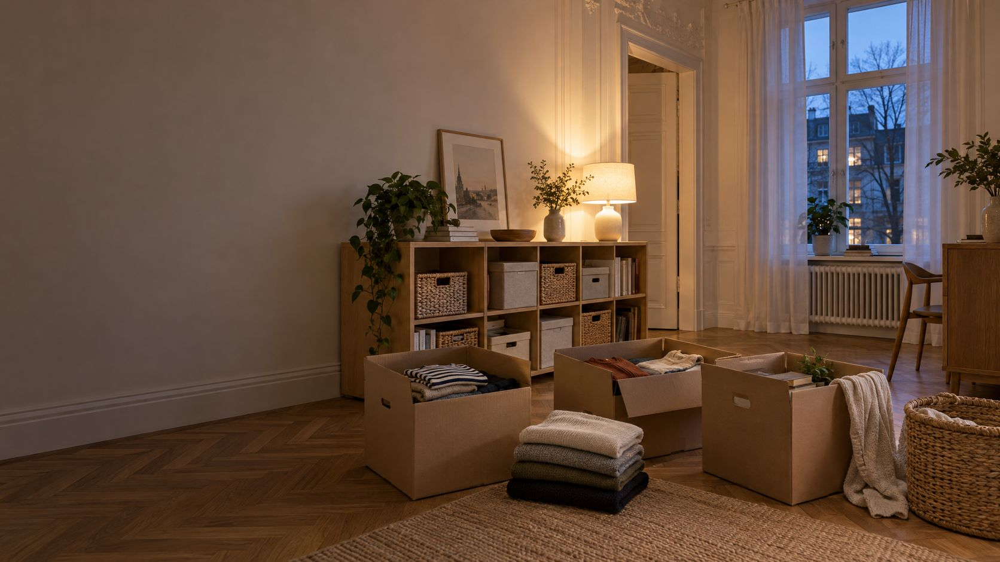

Wohnung ausmisten mit Plan
Weniger Dinge, mehr Platz, mehr Ruhe. Mit vier Kisten, kurzen Einheiten und der richtigen Reihenfolge schaffst du es, ohne ein ganzes Wochenende zu opfern.
Miste nach Kategorien statt nach Zimmern aus: zuerst Kleidung, dann Bücher, Papiere und Kleinkram, Erinnerungsstücke zuletzt. Sortiere alles in vier Kisten: behalten, weggeben, wegwerfen, unsicher. Was ein Jahr lang in der Unsicher-Kiste liegt, ohne dass du es vermisst, darf gehen. Gut erhaltene Kleidung kommt in den Altkleidercontainer, kleine Elektrogeräte unter 25 cm nehmen viele Händler kostenlos zurück.
Die Vier-Kisten-Methode.
Stell vier Kisten auf, bevor du anfängst. Jedes Teil geht durch deine Hand und landet in genau einer.
Der Ausmist-Planer.
Wähle, was du dir vornimmst, und wie viel Zeit du am Tag hast. Der Plan sagt dir, wann du fertig bist und was an welchem Tag dran ist.
Die Zeiten sind unsere Richtwerte für eine durchschnittliche Wohnung. Ein voller Keller oder ein großer Kleiderschrank dauern länger. Plane lieber zu viel Zeit ein als zu wenig. Was nach dem Ausmisten neu an seinen Platz soll, kannst du vorher im Raumplaner ausprobieren.
In sechs Schritten zu mehr Platz.
Klein anfangen
Eine Schublade, ein Fach, eine Kiste. Feste kurze Einheiten halten länger durch als ein großer Aufräumtag, nach dem du erschöpft bist.
Nach Kategorien, nicht nach Zimmern
Hol alle Pullover aus allen Schränken zusammen, nicht nur die aus dem Schlafzimmer. Erst dann siehst du, wie viele es wirklich sind.
Mit dem Leichten beginnen
Kleidung zuerst, dann Bücher, Papiere und Kleinkram aus Küche, Bad und Keller. Fotos und Erinnerungsstücke kommen ganz zum Schluss, wenn du geübt bist.
Ehrliche Fragen stellen
Habe ich es im letzten Jahr benutzt? Würde ich es heute wieder kaufen? Habe ich mehrere davon? Wenn alles Nein ist, darf es gehen.
Sofort raus damit
Die Weggeben-Kiste kommt noch am selben Tag ins Auto oder in den Flur, die Wegwerfen-Kiste in die Tonne. Sonst wandern die Sachen zurück in die Schränke.
Jedem Ding einen Platz
Was bleibt, bekommt einen festen Ort. Gleiches zu Gleichem, oft Gebrauchtes nach vorn und in Griffhöhe, Seltenes nach oben oder unters Bett.

Wohin damit?
Weggeben ist der Teil, an dem es oft hängt. So wirst du die Sachen richtig los.
- Kleidung und Schuhe: Gut Erhaltenes kommt in den Altkleidercontainer, zu Kleiderkammern oder Sozialkaufhäusern. Seit 1. Januar 2025 müssen Alttextilien in der EU getrennt gesammelt werden. Die Verbraucherzentrale Hamburg rät trotzdem: Stark verschmutzte oder kaputte Textilien weiter in den Restmüll, weil es für sie noch keine sinnvolle Verwertung gibt. Frag im Zweifel bei deiner Stadt nach.
- Kleine Elektrogeräte: Geräte mit höchstens 25 cm Kantenlänge nehmen Elektrohändler ab 400 m² Verkaufsfläche und Supermärkte ab 800 m², die Elektrogeräte verkaufen, kostenlos zurück. Du brauchst keinen Kassenbon und musst nichts Neues kaufen. Batterien vorher herausnehmen, wenn das geht, und Handys und Festplatten selbst löschen.
- Große Geräte: Der Händler nimmt sie beim Kauf eines gleichartigen Neugeräts mit. Ohne Neukauf geht es kostenlos zum Wertstoffhof.
- Möbel: Verschenken über Nachbarschaftsgruppen oder Kleinanzeigen, sonst Sperrmüll. Ob die Abholung etwas kostet, regelt deine Kommune.
- Verkaufen: Wer seine eigenen gebrauchten Sachen verkauft, muss darauf in der Regel keine Steuern zahlen. Plattformen melden dem Finanzamt allerdings, wer im Jahr 30 oder mehr Verkäufe oder 2.000 € Umsatz erreicht. Die Meldung allein bedeutet keine Steuerpflicht. Wer gezielt kauft, um weiterzuverkaufen, handelt gewerblich.
- Bücher und Spiele: Öffentliche Bücherschränke, Büchereien, Kitas und Schulen freuen sich oft über gut erhaltene Sachen. Frag vorher kurz nach.
Das ist keine Steuer- oder Rechtsberatung. Bei vielen Verkäufen oder wertvollen Stücken wie Schmuck, Uhren oder Kunst lohnt sich ein Blick in die Quellen oder ein Gespräch mit dem Steuerbüro.
Stauraum, der Ordnung hält.
- Geschlossen statt offen: Körbe, Boxen und Fronten machen den Raum ruhig. Offene Regale zeigen nur ausgewählte Dinge. Mehr Ideen stehen unter Kleine Räume größer wirken lassen.
- Die Höhe nutzen: Ein Regal bis unter die Decke, Fächer über der Tür, Boxen auf dem Schrank für Saisonsachen.
- Unter dem Bett: Flache Rollboxen mit Deckel für Bettwäsche und Winterkleidung. Miss vorher die freie Höhe unter dem Bettrahmen.
- Aufrecht falten: In Schubladen stehen T-Shirts und Pullover nebeneinander statt gestapelt. Du siehst alles und ziehst nichts von unten heraus.
- Der Flur als Schleuse: Nur was du täglich brauchst, bleibt im Eingang. Wie das geht, steht unter Flur einrichten.
- Eine rein, eine raus: Kommt ein neuer Pullover, geht ein alter. So bleibt der gewonnene Platz frei.
Häufige Fehler.
- Zuerst Aufbewahrung kaufen: Erst ausmisten, dann messen, dann Boxen kaufen. Sonst verstaust du nur ordentlich, was du gar nicht brauchst.
- Alles an einem Tag: Nach ein paar Stunden lässt die Entscheidungskraft nach und alles landet in der Unsicher-Kiste.
- Mit Erinnerungsstücken beginnen: Briefe und Fotos kosten die meiste Kraft. Heb sie dir für das Ende auf.
- Für andere entscheiden: Miste deine eigenen Sachen aus. Bei Mitbewohnern und Familie zählt ihre Entscheidung, sonst gibt es Streit.
- Kisten stehen lassen: Eine volle Spendenkiste im Flur ist nur umgezogenes Chaos. Gleich einen Abgabetermin festlegen.
Checkliste.
Hak ab, was erledigt ist. Der Stand bleibt nur in deinem Browser.
Für Ordnung und Stauraum.
Ideen zum Stöbern. Die Links führen zu einer Suche bei AmazonAnzeige
Häufige Fragen.
Womit fange ich beim Ausmisten an?
Mit etwas Kleinem und Leichtem, zum Beispiel einer Schublade oder deinen Socken. Kleidung ist ein guter Start, weil die Entscheidungen leichter fallen als bei Fotos oder Briefen.
Was ist die Vier-Kisten-Methode?
Du sortierst jedes Teil in eine von vier Kisten: behalten, weggeben, wegwerfen und unsicher. Die Unsicher-Kiste bekommt ein Datum. Hast du nach einem Jahr nichts daraus vermisst, kann sie weg.
Wohin mit kaputter Kleidung?
Gut erhaltene Kleidung gehört in den Altkleidercontainer. Stark verschmutzte oder kaputte Textilien rät die Verbraucherzentrale Hamburg weiter über den Restmüll zu entsorgen. Manche Städte haben eigene Regeln, frag im Zweifel bei der Abfallberatung.
Muss ich Steuern zahlen, wenn ich Sachen verkaufe?
Für deine eigenen gebrauchten Alltagsgegenstände in der Regel nicht. Plattformen melden zwar Verkäufer ab 30 Verkäufen oder 2.000 € im Jahr ans Finanzamt, die Meldung bedeutet aber noch keine Steuer. Das ist keine Steuerberatung.
Wie lange dauert es, eine Wohnung auszumisten?
Das hängt von der Menge ab. Mit 30 Minuten an fünf Tagen pro Woche schaffst du eine normale Wohnung in einigen Wochen. Der Ausmist-Planer rechnet es für dich aus.
Quellen.
Alle 7 Quellen anzeigenBosch Home Magazin · Verbraucherzentrale Hamburg · Berlin.de, Senatsverwaltung für Umwelt · Stiftung Warentest und 3 weitere
- Bosch Home Magazinbosch-home.comAusmisten, Tipps mit Kisten-Methode und 12-Monate-Regel
- Verbraucherzentrale Hamburgvzhh.deVerwirrung um Getrenntsammlungspflicht für Altkleider (20.02.2025)
- Berlin.de, Senatsverwaltung für Umweltberlin.deService Alttextilien
- Stiftung Warentesttest.deFAQ Elektroschrott, so entsorgen Sie alte Elektrogeräte korrekt (01.12.2025)
- Umweltbundesamtumweltbundesamt.deElektroaltgeräte richtig entsorgen
- smartsteuersmartsteuer.deNeue Meldepflicht, das weiß das Finanzamt jetzt über dich (20.09.2026)
- Finanztipfinanztip.deSteuerfolgen beim Onlineverkauf
Geprüft am 15.11.2026. Die Zeiten im Planer sind eigene Richtwerte.